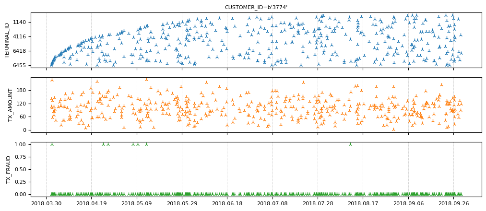
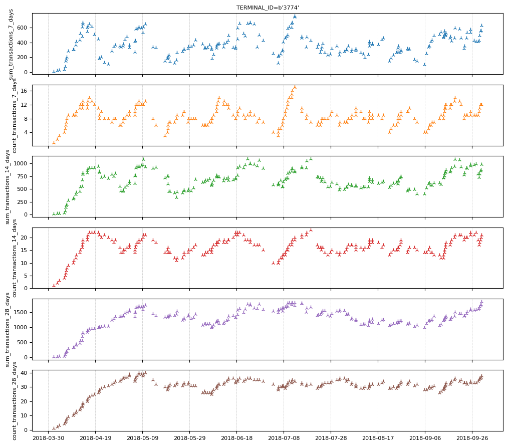
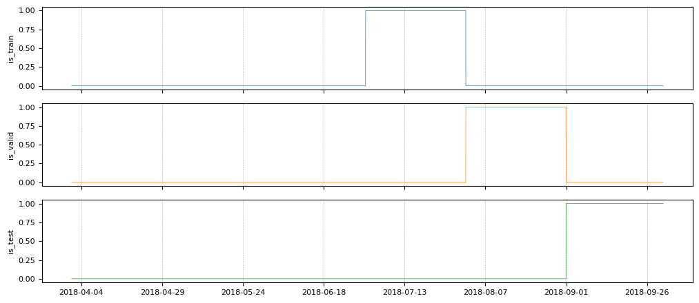
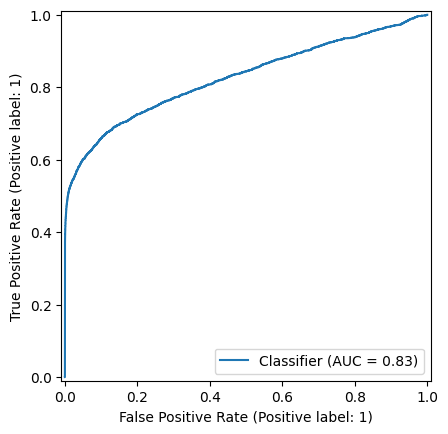

Event classification for payment card fraud detection
Author: achoum
Date created: 2024/02/01
Last modified: 2024/02/01
Description: Detection of fraudulent payment card transactions using Temporian and a feed-forward neural network.

This notebook depends on Keras 3, Temporian, and a few other libraries. You can install them as follow:
pip install temporian keras pandas tf-nightly scikit-learn -U
import keras # To train the Machine Learning model
import temporian as tp # To convert transactions into tabular data
import numpy as np
import os
import pandas as pd
import datetime
import math
import tensorflow as tf
from sklearn.metrics import RocCurveDisplay
Introduction
Payment fraud detection is critical for banks, businesses, and consumers. In Europe alone, fraudulent transactions were estimated at €1.89 billion in 2019. Worldwide, approximately 3.6% of commerce revenue is lost to fraud. In this notebook, we train and evaluate a model to detect fraudulent transactions using the synthetic dataset attached to the book Reproducible Machine Learning for Credit Card Fraud Detection by Le Borgne et al.
Fraudulent transactions often cannot be detected by looking at transactions in isolation. Instead, fraudulent transactions are detected by looking at patterns across multiple transactions from the same user, to the same merchant, or with other types of relationships. To express these relationships in a way that is understandable by a machine learning model, and to augment features with feature engineering, we We use the Temporian preprocessing library.
We preprocess a transaction dataset into a tabular dataset and use a feed-forward neural network to learn the patterns of fraud and make predictions.
Loading the dataset
The dataset contains payment transactions sampled between April 1, 2018 and September 30, 2018. The transactions are stored in CSV files, one for each day.
Note: Downloading the dataset takes ~1 minute.
start_date = datetime.date(2018, 4, 1)
end_date = datetime.date(2018, 9, 30)
# Load the dataset as a Pandas dataframe.
cache_path = "fraud_detection_cache.csv"
if not os.path.exists(cache_path):
print("Download dataset")
dataframes = []
num_files = (end_date - start_date).days
counter = 0
while start_date <= end_date:
if counter % (num_files // 10) == 0:
print(f"[{100 * (counter+1) // num_files}%]", end="", flush=True)
print(".", end="", flush=True)
url = f"https://github.com/Fraud-Detection-Handbook/simulated-data-raw/raw/6e67dbd0a3bfe0d7ec33abc4bce5f37cd4ff0d6a/data/{start_date}.pkl"
dataframes.append(pd.read_pickle(url))
start_date += datetime.timedelta(days=1)
counter += 1
print("done", flush=True)
transactions_dataframe = pd.concat(dataframes)
transactions_dataframe.to_csv(cache_path, index=False)
else:
print("Load dataset from cache")
transactions_dataframe = pd.read_csv(
cache_path, dtype={"CUSTOMER_ID": bytes, "TERMINAL_ID": bytes}
)
print(f"Found {len(transactions_dataframe)} transactions")
Download dataset
[0%]..................[10%]..................[20%]..................[30%]..................[40%]..................[50%]..................[59%]..................[69%]..................[79%]..................[89%]..................[99%]...done
Found 1754155 transactions
Each transaction is represented by a single row, with the following columns of interest:
- TX_DATETIME: The date and time of the transaction.
- CUSTOMER_ID: The unique identifier of the customer.
- TERMINAL_ID: The identifier of the terminal where the transaction was made.
- TX_AMOUNT: The amount of the transaction.
- TX_FRAUD: Whether the transaction is fraudulent (1) or not (0).
transactions_dataframe = transactions_dataframe[
["TX_DATETIME", "CUSTOMER_ID", "TERMINAL_ID", "TX_AMOUNT", "TX_FRAUD"]
]
transactions_dataframe.head(4)
| TX_DATETIME | CUSTOMER_ID | TERMINAL_ID | TX_AMOUNT | TX_FRAUD | |
|---|---|---|---|---|---|
| 0 | 2018-04-01 00:00:31 | 596 | 3156 | 57.16 | 0 |
| 1 | 2018-04-01 00:02:10 | 4961 | 3412 | 81.51 | 0 |
| 2 | 2018-04-01 00:07:56 | 2 | 1365 | 146.00 | 0 |
| 3 | 2018-04-01 00:09:29 | 4128 | 8737 | 64.49 | 0 |
The dataset is highly imbalanced, with the majority of transactions being legitimate.
fraudulent_rate = transactions_dataframe["TX_FRAUD"].mean()
print("Rate of fraudulent transactions:", fraudulent_rate)
Rate of fraudulent transactions: 0.008369271814634397
The pandas dataframe is converted into a Temporian EventSet, which is better suited for the data exploration and feature preprocessing of the next steps.
transactions_evset = tp.from_pandas(transactions_dataframe, timestamps="TX_DATETIME")
transactions_evset
WARNING:root:Feature "CUSTOMER_ID" is an array of numpy.object_ and will be casted to numpy.string_ (Note: numpy.string_ is equivalent to numpy.bytes_).
WARNING:root:Feature "TERMINAL_ID" is an array of numpy.object_ and will be casted to numpy.string_ (Note: numpy.string_ is equivalent to numpy.bytes_).
| timestamp | CUSTOMER_ID | TERMINAL_ID | TX_AMOUNT | TX_FRAUD |
|---|---|---|---|---|
| 2018-04-01 00:00:31+00:00 | 596 | 3156 | 57.16 | 0 |
| 2018-04-01 00:02:10+00:00 | 4961 | 3412 | 81.51 | 0 |
| 2018-04-01 00:07:56+00:00 | 2 | 1365 | 146 | 0 |
| 2018-04-01 00:09:29+00:00 | 4128 | 8737 | 64.49 | 0 |
| 2018-04-01 00:10:34+00:00 | 927 | 9906 | 50.99 | 0 |
| … | … | … | … | … |
It is possible to plot the entire dataset, but the resulting plot will be difficult to read. Instead, we can group the transactions per client.
transactions_evset.add_index("CUSTOMER_ID").plot(indexes="3774")

Note the few fraudulent transactions for this client.
Preparing the training data
Fraudulent transactions in isolation cannot be detected. Instead, we need to
connect related transactions. For each transaction, we compute the sum and count
of transactions for the same terminal in the last n days. Because we don't
know the correct value for n, we use multiple values for n and compute a
set of features for each of them.
# Group the transactions per terminal
transactions_per_terminal = transactions_evset.add_index("TERMINAL_ID")
# Moving statistics per terminal
tmp_features = []
for n in [7, 14, 28]:
tmp_features.append(
transactions_per_terminal["TX_AMOUNT"]
.moving_sum(tp.duration.days(n))
.rename(f"sum_transactions_{n}_days")
)
tmp_features.append(
transactions_per_terminal.moving_count(tp.duration.days(n)).rename(
f"count_transactions_{n}_days"
)
)
feature_set_1 = tp.glue(*tmp_features)
feature_set_1
| timestamp | sum_transactions_7_days | count_transactions_7_days | sum_transactions_14_days | count_transactions_14_days | sum_transactions_28_days | count_transactions_28_days |
|---|---|---|---|---|---|---|
| 2018-04-02 01:00:01+00:00 | 16.07 | 1 | 16.07 | 1 | 16.07 | 1 |
| 2018-04-02 09:49:55+00:00 | 83.9 | 2 | 83.9 | 2 | 83.9 | 2 |
| 2018-04-03 12:14:41+00:00 | 110.7 | 3 | 110.7 | 3 | 110.7 | 3 |
| 2018-04-05 16:47:41+00:00 | 151.2 | 4 | 151.2 | 4 | 151.2 | 4 |
| 2018-04-07 06:05:21+00:00 | 199.6 | 5 | 199.6 | 5 | 199.6 | 5 |
| … | … | … | … | … | … | … |
| timestamp | sum_transactions_7_days | count_transactions_7_days | sum_transactions_14_days | count_transactions_14_days | sum_transactions_28_days | count_transactions_28_days |
|---|---|---|---|---|---|---|
| 2018-04-01 16:24:39+00:00 | 70.36 | 1 | 70.36 | 1 | 70.36 | 1 |
| 2018-04-02 11:25:03+00:00 | 87.79 | 2 | 87.79 | 2 | 87.79 | 2 |
| 2018-04-04 08:31:48+00:00 | 211.6 | 3 | 211.6 | 3 | 211.6 | 3 |
| 2018-04-04 14:15:28+00:00 | 315 | 4 | 315 | 4 | 315 | 4 |
| 2018-04-04 20:54:17+00:00 | 446.5 | 5 | 446.5 | 5 | 446.5 | 5 |
| … | … | … | … | … | … | … |
| timestamp | sum_transactions_7_days | count_transactions_7_days | sum_transactions_14_days | count_transactions_14_days | sum_transactions_28_days | count_transactions_28_days |
|---|---|---|---|---|---|---|
| 2018-04-01 14:11:55+00:00 | 2.9 | 1 | 2.9 | 1 | 2.9 | 1 |
| 2018-04-02 11:01:07+00:00 | 17.04 | 2 | 17.04 | 2 | 17.04 | 2 |
| 2018-04-03 13:46:58+00:00 | 118.2 | 3 | 118.2 | 3 | 118.2 | 3 |
| 2018-04-04 03:27:11+00:00 | 161.7 | 4 | 161.7 | 4 | 161.7 | 4 |
| 2018-04-05 17:58:10+00:00 | 171.3 | 5 | 171.3 | 5 | 171.3 | 5 |
| … | … | … | … | … | … | … |
| timestamp | sum_transactions_7_days | count_transactions_7_days | sum_transactions_14_days | count_transactions_14_days | sum_transactions_28_days | count_transactions_28_days |
|---|---|---|---|---|---|---|
| 2018-04-02 10:37:42+00:00 | 6.31 | 1 | 6.31 | 1 | 6.31 | 1 |
| 2018-04-04 19:14:23+00:00 | 12.26 | 2 | 12.26 | 2 | 12.26 | 2 |
| 2018-04-07 04:01:22+00:00 | 65.12 | 3 | 65.12 | 3 | 65.12 | 3 |
| 2018-04-07 12:18:27+00:00 | 112.4 | 4 | 112.4 | 4 | 112.4 | 4 |
| 2018-04-07 21:11:03+00:00 | 170.4 | 5 | 170.4 | 5 | 170.4 | 5 |
| … | … | … | … | … | … | … |
Let's look at the features of terminal "3774".
feature_set_1.plot(indexes="3774")

A transaction's fraudulent status is not known at the time of the transaction (otherwise, there would be no problem). However, the banks knows if a transacation is fraudulent one week after it is made. We create a set of features that indicate the number and ratio of fraudulent transactions in the last N days.
# Lag the transactions by one week.
lagged_transactions = transactions_per_terminal.lag(tp.duration.weeks(1))
# Moving statistics per customer
tmp_features = []
for n in [7, 14, 28]:
tmp_features.append(
lagged_transactions["TX_FRAUD"]
.moving_sum(tp.duration.days(n), sampling=transactions_per_terminal)
.rename(f"count_fraud_transactions_{n}_days")
)
tmp_features.append(
lagged_transactions["TX_FRAUD"]
.cast(tp.float32)
.simple_moving_average(tp.duration.days(n), sampling=transactions_per_terminal)
.rename(f"rate_fraud_transactions_{n}_days")
)
feature_set_2 = tp.glue(*tmp_features)
Transaction date and time can be correlated with fraud. While each transaction has a timestamp, a machine learning model might struggle to consume them directly. Instead, we extract various informative calendar features from the timestamps, such as hour, day of the week (e.g., Monday, Tuesday), and day of the month (1-31).
feature_set_3 = tp.glue(
transactions_per_terminal.calendar_hour(),
transactions_per_terminal.calendar_day_of_week(),
)
Finally, we group together all the features and the label.
all_data = tp.glue(
transactions_per_terminal, feature_set_1, feature_set_2, feature_set_3
).drop_index()
print("All the available features:")
all_data.schema.feature_names()
All the available features:
['CUSTOMER_ID',
'TX_AMOUNT',
'TX_FRAUD',
'sum_transactions_7_days',
'count_transactions_7_days',
'sum_transactions_14_days',
'count_transactions_14_days',
'sum_transactions_28_days',
'count_transactions_28_days',
'count_fraud_transactions_7_days',
'rate_fraud_transactions_7_days',
'count_fraud_transactions_14_days',
'rate_fraud_transactions_14_days',
'count_fraud_transactions_28_days',
'rate_fraud_transactions_28_days',
'calendar_hour',
'calendar_day_of_week',
'TERMINAL_ID']
We extract the name of the input features.
input_feature_names = [k for k in all_data.schema.feature_names() if k.islower()]
print("The model's input features:")
input_feature_names
The model's input features:
['sum_transactions_7_days',
'count_transactions_7_days',
'sum_transactions_14_days',
'count_transactions_14_days',
'sum_transactions_28_days',
'count_transactions_28_days',
'count_fraud_transactions_7_days',
'rate_fraud_transactions_7_days',
'count_fraud_transactions_14_days',
'rate_fraud_transactions_14_days',
'count_fraud_transactions_28_days',
'rate_fraud_transactions_28_days',
'calendar_hour',
'calendar_day_of_week']
For neural networks to work correctly, numerical inputs must be normalized. A common approach is to apply z-normalization, which involves subtracting the mean and dividing by the standard deviation estimated from the training data to each value. In forecasting, such z-normalization is not recommended as it would lead to future leakage. Specifically, to classify a transaction at time t, we cannot rely on data after time t since, at serving time when making a prediction at time t, no subsequent data is available yet. In short, at time t, we are limited to using data that precedes or is concurrent with time t.
The solution is therefore to apply z-normalization over time, which means that we normalize each transaction using the mean and standard deviation computed from the past data for that transaction.
Future leakage is pernicious. Luckily, Temporian is here to help: the only
operator that can cause future leakage is EventSet.leak(). If you are not
using EventSet.leak(), your preprocessing is guaranteed not to create
future leakage.
Note: For advanced pipelines, you can also check programatically that a
feature does not depends on an EventSet.leak() operation.
# Cast all values (e.g. ints) to floats.
values = all_data[input_feature_names].cast(tp.float32)
# Apply z-normalization overtime.
normalized_features = (
values - values.simple_moving_average(math.inf)
) / values.moving_standard_deviation(math.inf)
# Restore the original name of the features.
normalized_features = normalized_features.rename(values.schema.feature_names())
print(normalized_features)
indexes: []
features: [('sum_transactions_7_days', float32), ('count_transactions_7_days', float32), ('sum_transactions_14_days', float32), ('count_transactions_14_days', float32), ('sum_transactions_28_days', float32), ('count_transactions_28_days', float32), ('count_fraud_transactions_7_days', float32), ('rate_fraud_transactions_7_days', float32), ('count_fraud_transactions_14_days', float32), ('rate_fraud_transactions_14_days', float32), ('count_fraud_transactions_28_days', float32), ('rate_fraud_transactions_28_days', float32), ('calendar_hour', float32), ('calendar_day_of_week', float32)]
events:
(1754155 events):
timestamps: ['2018-04-01T00:00:31' '2018-04-01T00:02:10' '2018-04-01T00:07:56' ...
'2018-09-30T23:58:21' '2018-09-30T23:59:52' '2018-09-30T23:59:57']
'sum_transactions_7_days': [ 0. 1. 1.3636 ... -0.064 -0.2059 0.8428]
'count_transactions_7_days': [ nan nan nan ... 1.0128 0.6892 1.66 ]
'sum_transactions_14_days': [ 0. 1. 1.3636 ... -0.7811 0.156 1.379 ]
'count_transactions_14_days': [ nan nan nan ... 0.2969 0.2969 2.0532]
'sum_transactions_28_days': [ 0. 1. 1.3636 ... -0.7154 -0.2989 1.9396]
'count_transactions_28_days': [ nan nan nan ... 0.1172 -0.1958 1.8908]
'count_fraud_transactions_7_days': [ nan nan nan ... -0.1043 -0.1043 -0.1043]
'rate_fraud_transactions_7_days': [ nan nan nan ... -0.1137 -0.1137 -0.1137]
'count_fraud_transactions_14_days': [ nan nan nan ... -0.1133 -0.1133 0.9303]
'rate_fraud_transactions_14_days': [ nan nan nan ... -0.1216 -0.1216 0.5275]
...
memory usage: 112.3 MB
/home/gbm/my_venv/lib/python3.11/site-packages/temporian/implementation/numpy/operators/binary/arithmetic.py:100: RuntimeWarning: invalid value encountered in divide
return evset_1_feature / evset_2_feature
The first transactions will be normalized using poor estimates of the mean and standard deviation since there are only a few transactions before them. To mitigate this issue, we remove the first week of data from the training dataset.
Notice that the first values contain NaN. In Temporian, NaN represents missing values, and all operators handle them accordingly. For instance, when calculating a moving average, NaN values are not included in the calculation and do not generate a NaN result.
However, neural networks cannot natively handle NaN values. So, we replace them with zeros.
normalized_features = normalized_features.fillna(0.0)
Finally, we group together the features and the labels.
normalized_all_data = tp.glue(normalized_features, all_data["TX_FRAUD"])
Split dataset into a train, validation and test set
To evaluate the quality of our machine learning model, we need training, validation and test sets. Since the system is dynamic (new fraud patterns are being created all the time), it is important for the training set to come before the validation set, and the validation set come before the testing set:
- Training: April 8, 2018 to July 31, 2018
- Validation: August 1, 2018 to August 31, 2018
- Testing: September 1, 2018 to September 30, 2018
For the example to run faster, we will effectively reduce the size of the training set to: - Training: July 1, 2018 to July 31, 2018
# begin_train = datetime.datetime(2018, 4, 8).timestamp() # Full training dataset
begin_train = datetime.datetime(2018, 7, 1).timestamp() # Reduced training dataset
begin_valid = datetime.datetime(2018, 8, 1).timestamp()
begin_test = datetime.datetime(2018, 9, 1).timestamp()
is_train = (normalized_all_data.timestamps() >= begin_train) & (
normalized_all_data.timestamps() < begin_valid
)
is_valid = (normalized_all_data.timestamps() >= begin_valid) & (
normalized_all_data.timestamps() < begin_test
)
is_test = normalized_all_data.timestamps() >= begin_test
is_train, is_valid and is_test are boolean features overtime that indicate
the limit of the tree folds. Let's plot them.
tp.plot(
[
is_train.rename("is_train"),
is_valid.rename("is_valid"),
is_test.rename("is_test"),
]
)

We filter the input features and label in each fold.
train_ds_evset = normalized_all_data.filter(is_train)
valid_ds_evset = normalized_all_data.filter(is_valid)
test_ds_evset = normalized_all_data.filter(is_test)
print(f"Training examples: {train_ds_evset.num_events()}")
print(f"Validation examples: {valid_ds_evset.num_events()}")
print(f"Testing examples: {test_ds_evset.num_events()}")
Training examples: 296924
Validation examples: 296579
Testing examples: 288064
It is important to split the dataset after the features have been computed because some of the features for the training dataset are computed from transactions during the training window.
Create TensorFlow datasets
We convert the datasets from EventSets to TensorFlow Datasets as Keras consumes them natively.
non_batched_train_ds = tp.to_tensorflow_dataset(train_ds_evset)
non_batched_valid_ds = tp.to_tensorflow_dataset(valid_ds_evset)
non_batched_test_ds = tp.to_tensorflow_dataset(test_ds_evset)
The following processing steps are applied using TensorFlow datasets:
- The features and labels are separated using
extract_features_and_labelin the format that Keras expects. - The dataset is batched, which means that the examples are grouped into mini-batches.
- The training examples are shuffled to improve the quality of mini-batch training.
As we noted before, the dataset is imbalanced in the direction of legitimate
transactions. While we want to evaluate our model on this original distribution,
neural networks often train poorly on strongly imbalanced datasets. Therefore,
we resample the training dataset to a ratio of 80% legitimate / 20% fraudulent
using rejection_resample.
def extract_features_and_label(example):
features = {k: example[k] for k in input_feature_names}
labels = tf.cast(example["TX_FRAUD"], tf.int32)
return features, labels
# Target ratio of fraudulent transactions in the training dataset.
target_rate = 0.2
# Number of examples in a mini-batch.
batch_size = 32
train_ds = (
non_batched_train_ds.shuffle(10000)
.rejection_resample(
class_func=lambda x: tf.cast(x["TX_FRAUD"], tf.int32),
target_dist=[1 - target_rate, target_rate],
initial_dist=[1 - fraudulent_rate, fraudulent_rate],
)
.map(lambda _, x: x) # Remove the label copy added by "rejection_resample".
.batch(batch_size)
.map(extract_features_and_label)
.prefetch(tf.data.AUTOTUNE)
)
# The test and validation dataset does not need resampling or shuffling.
valid_ds = (
non_batched_valid_ds.batch(batch_size)
.map(extract_features_and_label)
.prefetch(tf.data.AUTOTUNE)
)
test_ds = (
non_batched_test_ds.batch(batch_size)
.map(extract_features_and_label)
.prefetch(tf.data.AUTOTUNE)
)
WARNING:tensorflow:From /home/gbm/my_venv/lib/python3.11/site-packages/tensorflow/python/data/ops/dataset_ops.py:4956: Print (from tensorflow.python.ops.logging_ops) is deprecated and will be removed after 2018-08-20.
Instructions for updating:
Use tf.print instead of tf.Print. Note that tf.print returns a no-output operator that directly prints the output. Outside of defuns or eager mode, this operator will not be executed unless it is directly specified in session.run or used as a control dependency for other operators. This is only a concern in graph mode. Below is an example of how to ensure tf.print executes in graph mode:
WARNING:tensorflow:From /home/gbm/my_venv/lib/python3.11/site-packages/tensorflow/python/data/ops/dataset_ops.py:4956: Print (from tensorflow.python.ops.logging_ops) is deprecated and will be removed after 2018-08-20.
Instructions for updating:
Use tf.print instead of tf.Print. Note that tf.print returns a no-output operator that directly prints the output. Outside of defuns or eager mode, this operator will not be executed unless it is directly specified in session.run or used as a control dependency for other operators. This is only a concern in graph mode. Below is an example of how to ensure tf.print executes in graph mode:
We print the first four examples of the training dataset. This is a simple way to identify some of the errors that could have been made above.
for features, labels in train_ds.take(1):
print("features")
for feature_name, feature_value in features.items():
print(f"\t{feature_name}: {feature_value[:4]}")
print(f"labels: {labels[:4]}")
features
sum_transactions_7_days: [-0.9417254 -1.1157728 -0.5594417 0.7264878]
count_transactions_7_days: [-0.23363686 -0.8702531 -0.23328805 0.7198456 ]
sum_transactions_14_days: [-0.9084115 2.8127224 0.7297886 0.0666021]
count_transactions_14_days: [-0.54289246 2.4122045 0.1963075 0.3798441 ]
sum_transactions_28_days: [-0.44202712 2.3494742 0.20992276 0.97425723]
count_transactions_28_days: [0.02585898 1.8197156 0.12127225 0.9692807 ]
count_fraud_transactions_7_days: [ 8.007475 -0.09783722 1.9282814 -0.09780706]
rate_fraud_transactions_7_days: [14.308702 -0.10952345 1.6929103 -0.10949575]
count_fraud_transactions_14_days: [12.411182 -0.1045466 1.0330476 -0.1045142]
rate_fraud_transactions_14_days: [15.742149 -0.11567765 1.0170861 -0.11565071]
count_fraud_transactions_28_days: [ 7.420907 -0.11298086 0.572011 -0.11293571]
rate_fraud_transactions_28_days: [10.065552 -0.12640427 0.5862939 -0.12637936]
calendar_hour: [-0.68766755 0.6972711 -1.6792761 0.49967623]
calendar_day_of_week: [1.492013 1.4789637 1.4978485 1.4818214]
labels: [1 0 0 0]
Proportion of examples rejected by sampler is high: [0.991630733][0.991630733 0.00836927164][0 1]
Proportion of examples rejected by sampler is high: [0.991630733][0.991630733 0.00836927164][0 1]
Proportion of examples rejected by sampler is high: [0.991630733][0.991630733 0.00836927164][0 1]
Proportion of examples rejected by sampler is high: [0.991630733][0.991630733 0.00836927164][0 1]
Proportion of examples rejected by sampler is high: [0.991630733][0.991630733 0.00836927164][0 1]
Proportion of examples rejected by sampler is high: [0.991630733][0.991630733 0.00836927164][0 1]
Proportion of examples rejected by sampler is high: [0.991630733][0.991630733 0.00836927164][0 1]
Proportion of examples rejected by sampler is high: [0.991630733][0.991630733 0.00836927164][0 1]
Proportion of examples rejected by sampler is high: [0.991630733][0.991630733 0.00836927164][0 1]
Proportion of examples rejected by sampler is high: [0.991630733][0.991630733 0.00836927164][0 1]
Train the model
The original dataset is transactional, but the processed data is tabular and only contains normalized numerical values. Therefore, we train a feed-forward neural network.
inputs = [keras.Input(shape=(1,), name=name) for name in input_feature_names]
x = keras.layers.concatenate(inputs)
x = keras.layers.Dense(32, activation="sigmoid")(x)
x = keras.layers.Dense(16, activation="sigmoid")(x)
x = keras.layers.Dense(1, activation="sigmoid")(x)
model = keras.Model(inputs=inputs, outputs=x)
Our goal is to differentiate between the fraudulent and legitimate transactions, so we use a binary classification objective. Because the dataset is imbalanced, accuracy is not an informative metric. Instead, we evaluate the model using the area under the curve (AUC).
model.compile(
optimizer=keras.optimizers.Adam(0.01),
loss=keras.losses.BinaryCrossentropy(),
metrics=[keras.metrics.Accuracy(), keras.metrics.AUC()],
)
model.fit(train_ds, validation_data=valid_ds)
5/Unknown 1s 15ms/step - accuracy: 0.0000e+00 - auc: 0.4480 - loss: 0.7678
Proportion of examples rejected by sampler is high: [0.991630733][0.991630733 0.00836927164][0 1]
Proportion of examples rejected by sampler is high: [0.991630733][0.991630733 0.00836927164][0 1]
Proportion of examples rejected by sampler is high: [0.991630733][0.991630733 0.00836927164][0 1]
Proportion of examples rejected by sampler is high: [0.991630733][0.991630733 0.00836927164][0 1]
Proportion of examples rejected by sampler is high: [0.991630733][0.991630733 0.00836927164][0 1]
Proportion of examples rejected by sampler is high: [0.991630733][0.991630733 0.00836927164][0 1]
Proportion of examples rejected by sampler is high: [0.991630733][0.991630733 0.00836927164][0 1]
Proportion of examples rejected by sampler is high: [0.991630733][0.991630733 0.00836927164][0 1]
Proportion of examples rejected by sampler is high: [0.991630733][0.991630733 0.00836927164][0 1]
Proportion of examples rejected by sampler is high: [0.991630733][0.991630733 0.00836927164][0 1]
433/Unknown 23s 51ms/step - accuracy: 0.0000e+00 - auc: 0.8060 - loss: 0.3632
/usr/lib/python3.11/contextlib.py:155: UserWarning: Your input ran out of data; interrupting training. Make sure that your dataset or generator can generate at least `steps_per_epoch * epochs` batches. You may need to use the `.repeat()` function when building your dataset.
self.gen.throw(typ, value, traceback)
433/433 ━━━━━━━━━━━━━━━━━━━━ 30s 67ms/step - accuracy: 0.0000e+00 - auc: 0.8060 - loss: 0.3631 - val_accuracy: 0.0000e+00 - val_auc: 0.8252 - val_loss: 0.2133
<keras.src.callbacks.history.History at 0x7f8f74f0d750>
We evaluate the model on the test dataset.
model.evaluate(test_ds)
9002/9002 ━━━━━━━━━━━━━━━━━━━━ 7s 811us/step - accuracy: 0.0000e+00 - auc: 0.8357 - loss: 0.2161
[0.2171599417924881, 0.0, 0.8266682028770447]
With and AUC of ~83%, our simple fraud detector is showing encouraging results.
Plotting the ROC curve is a good solution to understand and select the operation point of the model i.e. the threshold applied on the model output to differentiate between fraudulent and legitimate transactions.
Compute the test predictions:
predictions = model.predict(test_ds)
predictions = np.nan_to_num(predictions, nan=0)
9002/9002 ━━━━━━━━━━━━━━━━━━━━ 10s 1ms/step
Extract the labels from the test set:
labels = np.concatenate([label for _, label in test_ds])
Finaly, we plot the ROC curve.
_ = RocCurveDisplay.from_predictions(labels, predictions)

The Keras model is ready to be used on transactions with an unknown fraud status, a.k.a. serving. We save the model on disk for future use.
Note: The model does not include the data preparation and preprocessing steps done in Pandas and Temporian. They have to be applied manually to the data fed into the model. While not demonstrated here, Temporian preprocessing can also be saved to disk with tp.save.
model.save("fraud_detection_model.keras")
The model can be later reloaded with:
loaded_model = keras.saving.load_model("fraud_detection_model.keras")
# Generate predictions with the loaded model on 5 test examples.
loaded_model.predict(test_ds.rebatch(5).take(1))
1/1 ━━━━━━━━━━━━━━━━━━━━ 0s 71ms/step
/usr/lib/python3.11/contextlib.py:155: UserWarning: Your input ran out of data; interrupting training. Make sure that your dataset or generator can generate at least `steps_per_epoch * epochs` batches. You may need to use the `.repeat()` function when building your dataset.
self.gen.throw(typ, value, traceback)
array([[0.08197185],
[0.16517264],
[0.13180313],
[0.10209075],
[0.14283912]], dtype=float32)
Conclusion
We trained a feed-forward neural network to identify fraudulent transactions. To feed them into the model, the transactions were preprocessed and transformed into a tabular dataset using Temporian. Now, a question to the reader: What could be done to further improve the model's performance?
Here are some ideas:
- Train the model on the entire dataset instead of a single month of data.
- Train the model for more epochs and use early stopping to ensure that the model is fully trained without overfitting.
- Make the feed-forward network more powerful by increasing the number of layers while ensuring that the model is regularized.
- Compute additional preprocessing features. For example, in addition to aggregating transactions by terminal, aggregate transactions by client.
- Use the Keras Tuner to perform hyperparameter tuning on the model. Note that the parameters of the preprocessing (e.g., the number of days of aggregations) are also hyperparameters that can be tuned.